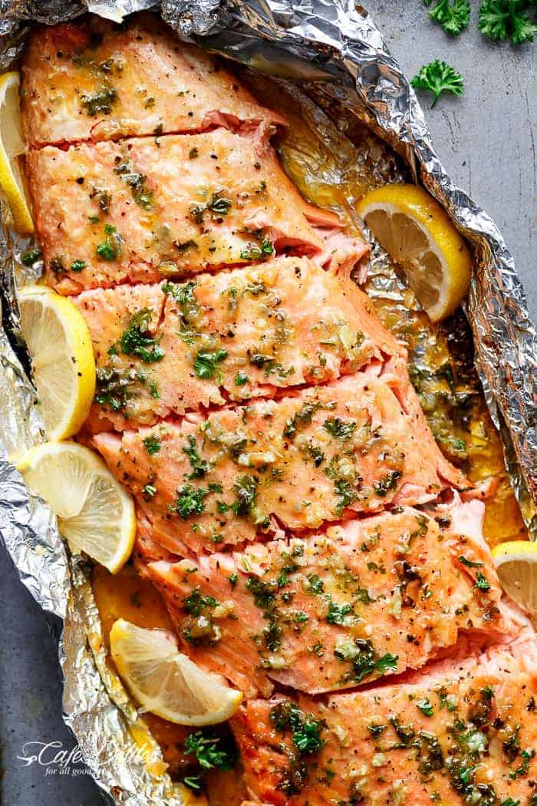

Honey Garlic Butter Salmon

Description
A delicious 4-ingredient honey garlic butter sauce is baked with a whole side of salmon, wrapped in foil, baked and broiled (or grilled) for that extra golden, crispy, caramelised and flakey finish!
Ingredients
- 1/4 cup butter
- 1/3 cup honey
- 4 large cloves garlic, crushed. OR 3 tablespoons minced
-
- 2 tablespoon fresh lemon juice
- 2 1/2 pound side of salmon
- 4 pinches of salt
- 2 tablespoons chopped parsley
Steps
- Position a rack in the middle of the oven. Preheat oven to 375°F | 190°C. Line a baking tray / sheet with a large piece of foil, big enough to fold over and seal to create a packet (or 2 long pieces of foil over lapping each other lengthways to create your salmon packet, depending on the width of you fillet).
- In a small saucepan, melt the butter over low-medium heat. Add the honey, garlic and lemon, and whisk until the honey has melted through the butter and the mixture is well combined.
- Place the salmon onto lined baking tray | sheet. Pour the butter/honey mixture over the salmon, and using a pastry brush or spoon, spread evenly over the salmon. Sprinkle with a good amount of salt (about 2 teaspoons) and cracked pepper. Fold the sides of the foil over the salmon to cover and completely seal the packet closed so the butter does not leak.
- Bake until cooked through (about 15-18 minutes, depending on the thickness of your fish and your preference of doneness). Open the foil, being careful of any escaping steam, and grill / broil under the grill / broiler for 2-3 minutes on medium heat to caramelise the top. Garnish with parsley and serve immediately with lemon slices.